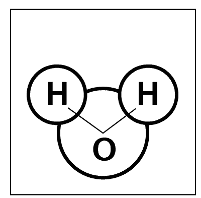
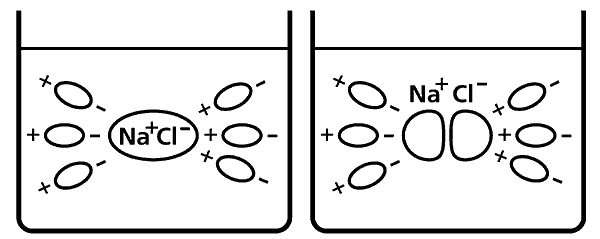

Свойства воды .

Обратимся теперь к свойствам воды и рассмотрим ее с точки зрения основных наук – физики, химии и др.
Молекула воды HO имеет форму тупоугольного треугольника (рис. 1), с углом между двумя связями кислород-водород примерно 104°. Электроны водородных атомов оттянуты к кислороду, так что «водородные углы» треугольника несут избыток положительного заряда, а «кислородный угол» – отрицательного. В результате «водородные углы» одной молекулы взаимодействуют с «кислородными углами» других молекул, и такая химическая связь (она называется водородной) объединяет молекулы воды в своеобразный пространственный полимер. Иными словами, хотя вода – жидкость, ее молекулы находятся не в хаотическом состоянии, а образуют некое подобие правильной структуры (что, вообще говоря, свойственно лишь кристаллам).

Рис. 1. Молекула воды
Благодаря этой особенности вода имеет высокую теплоемкость, то есть способна поглощать большие количества тепла (в первую очередь солнечной энергии) и оставаться при этом жидкостью. А это с точки зрения географии, геологии и метеорологии означает, что вода является главным климатообразующим фактором на нашей планете. Ранее уже говорилось о круговороте воды в природе. К этому нужно добавить следующее: воды океанов, морей, рек и озер являются гигантскими аккумуляторами тепла, причем в некоторых случаях это тепло доставляется из тропических областей в умеренные зоны очень быстро и эффективно. Вспомним Гольфстрим, «отопительную печь» Западной Европы, климат которой, на тех же широтах, гораздо мягче российского.
Коснусь еще нескольких общеизвестных, но очень важных свойств воды. Как упоминалось выше, существует три изотопа водорода: водород H (или протий), устойчивый дейтерий D и радиоактивный тритий T. Кроме того, в природе существует три изотопа кислорода. В результате различных комбинаций изотопов водорода с изотопами кислорода можно получить 42 различных вида воды. Наиболее знакомые нам – обычная вода HO и так называемые тяжелая (дейтериевая) DO и сверхтяжелая (тритиевая) TO вода. На Земле тритий присутствует в ничтожно малых количествах, а вот дейтерия довольно много – один атом D на 6700 атомов H, и это означает, что тяжелой воды в обычной весьма заметное количество – 150–160 г/т. С этим наш организм еще справляется, но вообще тяжелая вода для нас не слишком полезна.
Свойства воды как универсального растворителя определяются ее большой диэлектрической проницаемостью (для воздуха – 1, для воды – 80). Это означает, что разноименные электрические заряды притягиваются друг к другу в воде в восемьдесят раз слабее, чем в воздухе, и, соответственно, во столько же раз ослабевают силы межатомного сцепления в молекулах и твердых телах (вспомните про ионную связь!). Молекулы и кристаллы распадаются на ионы. Данное явление, называемое диссоциацией, можно описать иначе. Представьте картинку из школьного учебника химии (рис. 2), где молекулы воды изображены в виде маленьких огурцов-диполей,[6] молекула инородного вещества – в виде огурца-диполя побольше, причем диполи воды развернуты положительными концами к отрицательному концу инородной молекулы и отрицательными концами к ее положительному концу. Таким образом, диполи воды как бы разрывают электрическими силами ионную связь в молекуле вещества, превращая его в ионы. В результате кристалл поваренной соли NaCl растворяется, диссоциирует и присутствует в воде в виде ионов Naи Cl, а серная кислота HSO распадается на катион водорода Hи анион кислотного остатка SO. Молекулы воды тоже диссоциируют на ионы Hи OH, но в очень слабой степени.
Почему нам так важно разобраться с описанным выше явлением и запомнить, что множество веществ, растворяясь в воде, преобразуются в ионы? Потому, что способность ионов вступать в химические и биохимические реакции гораздо выше, чем у молекул. Молекулы электронейтральны, а ионы несут положительный или отрицательный заряд. Отличаясь большой активностью, они не упустят возможности отдать лишний или присоединить недостающий электрон. Вода является изолятором, но раствор соли или кислоты в воде – это электролит, который отлично проводит электрический ток. В этом легко убедиться, опустив в раствор электроды и подав на них напряжение. Наша питьевая вода с точки зрения физики и химии не что иное, как слабый электролит, в котором концентрация солей не должна превышать 1 г/л.

Рис. 2. Процесс диссоциации
В силу своей способности ослаблять межатомные и межмолекулярные связи вода является великим разрушителем, способным растворить что угодно: одни вещества – соль, сахар, всевозможные газы – со зримой быстротой, другие – металлы, твердые горные породы – более медленно, незаметно для глаза, но неотвратимо. Поэтому, например, не может быть идеальной дистиллированной воды – попав в сосуд, она тут же начинает растворять его стенки, и среди молекул HO появляется ничтожная примесь инородных молекул материала сосуда.
В заключение напомню еще об одном замечательном свойстве воды. Если расплавить любое твердое тело, то его объем увеличится, а это означает, что плотность всех твердых тел больше плотности соответствующих жидкостей, то есть они тонут в своих расплавах. У воды же все наоборот! При охлаждении и превращении в твердую фазу объем воды увеличивается, а плотность уменьшается – то есть лед не тонет, а плавает в воде. В противном случае, если бы лед тонул, все наши водоемы промерзали бы зимой до самого дна и были бы безжизненными. В том числе и Ледовитый океан, который являлся бы такой же многокилометровой толщей льдов, как Антарктида.